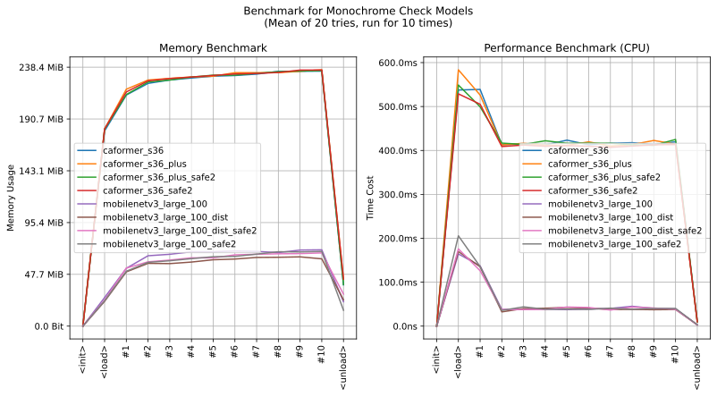

imgutils.validate.monochrome
- Overview:
A model for screening monochrome images, with the definition of monochrome images referring to Danbooru.
The following are testing images. The top two rows are monochrome images, and the bottom two rows are color images. Please note that monochrome images are not only those with all pixels in grayscale.

This is an overall benchmark of all the monochrome validation models:
The models are hosted on huggingface - deepghs/monochrome_detect.
get_monochrome_score
- imgutils.validate.monochrome.get_monochrome_score(image: str | PathLike | bytes | bytearray | BinaryIO | Image, model_name: str = 'mobilenetv3_large_100_dist_safe2') float[source]
- Overview:
Get monochrome score of the given image.
- Parameters:
image – Image to predict, can be a
PIL.Imageobject or the path of the image file.model_name – The model used for inference. The default value is
mobilenetv3_dist, which offers high runtime performance. If you need better accuracy, just usecaformer_s36.
- Examples::
>>> from imgutils.validate import get_monochrome_score >>> >>> get_monochrome_score('mono/1.jpg') # monochrome images 0.9614395499229431 >>> get_monochrome_score('mono/2.jpg') 0.9458909034729004 >>> get_monochrome_score('mono/3.jpg') 0.9559807777404785 >>> get_monochrome_score('mono/4.jpg') 0.9651952981948853 >>> get_monochrome_score('mono/5.jpg') 0.9379720687866211 >>> get_monochrome_score('mono/6.jpg') 0.8814834356307983 >>> >>> get_monochrome_score('colored/7.jpg') # colored images 0.03941023349761963 >>> get_monochrome_score('colored/8.jpg') 0.07492382079362869 >>> get_monochrome_score('colored/9.jpg') 0.09546589106321335 >>> get_monochrome_score('colored/10.jpg') 0.016521310433745384 >>> get_monochrome_score('colored/11.jpg') 0.005693843588232994 >>> get_monochrome_score('colored/12.jpg') 0.0315730981528759
is_monochrome
- imgutils.validate.monochrome.is_monochrome(image: str | PathLike | bytes | bytearray | BinaryIO | Image, threshold: float = 0.5, model_name: str = 'mobilenetv3_large_100_dist_safe2') bool[source]
- Overview:
Predict if the image is monochrome.
- Parameters:
image – Image to predict, can be a
PIL.Imageobject or the path of the image file.threshold – Threshold value during prediction. If the score is higher than the threshold, the image will be classified as monochrome.
model_name – The model used for inference. The default value is
mobilenetv3_dist, which offers high runtime performance. If you need better accuracy, just usecaformer_s36.
- Examples:
>>> import os >>> from imgutils.validate import is_monochrome >>> >>> is_monochrome('mono/1.jpg') # monochrome images True >>> is_monochrome('mono/2.jpg') True >>> is_monochrome('mono/3.jpg') True >>> is_monochrome('mono/4.jpg') True >>> is_monochrome('mono/5.jpg') True >>> is_monochrome('mono/6.jpg') True >>> is_monochrome('colored/7.jpg') # colored images False >>> is_monochrome('colored/8.jpg') False >>> is_monochrome('colored/9.jpg') False >>> is_monochrome('colored/10.jpg') False >>> is_monochrome('colored/11.jpg') False >>> is_monochrome('colored/12.jpg') False